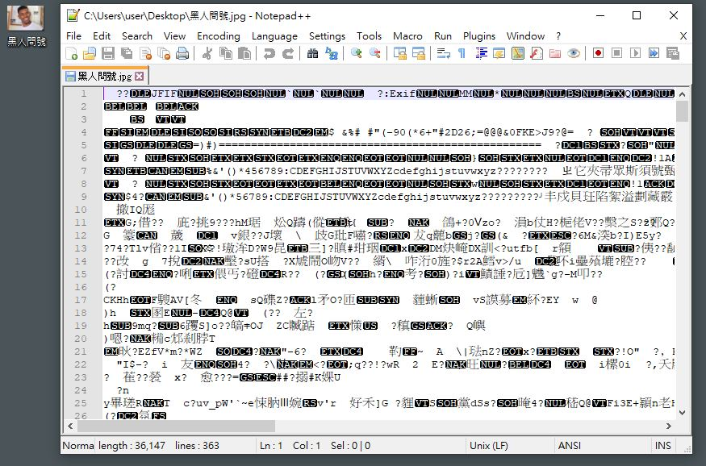
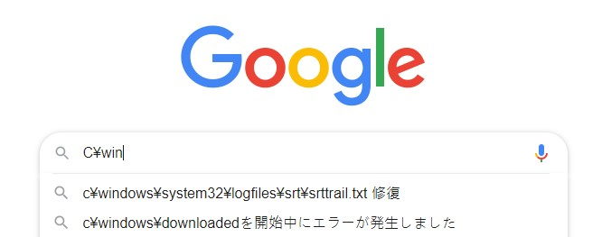

淺入淺出 Character Encoding
編碼是撰寫程式時很難避開的部分，但出乎意料的有不少程式設計者對其一知半解。
對，包括我，所以這篇是我學習的一個紀錄與整理啦。
整個歷史大略為早期群雄割據，中文簡繁各自成一家，各地區有自己獨特的編碼，直到後來 Unicode 一統天下，結束了編碼動盪的時代。
編碼
計算機領域的所有資料都是 Binary ，也就是 0 與 1 的組合。
那些純文本、執行檔、圖片、影片、音樂無一例外都是 Binary ，只不過 “ 解釋 “ 它們的方式不同，如同你可以用文字檔開啟圖片但會出現亂碼，其原因就在於文字編碼與圖片編碼不一致，對文字編碼來說這些 Binary 完全無法翻譯，最終變成了亂碼。

文字編碼
文字編碼原理都很單純，把 0101 等資訊對應至某個字元再顯示出來，早時國外最常使用的是 ASCII （ America Standard Code for Information Interchange ）。
其它常聽到的 ISO-8859-1 （或 Latin-1 ）是基於 ASCII 的擴充，於 0xA0 - 0xFF 範圍內加入了 96 個字母與符號
ASCII 總共定義了 128 個字元，除去 33 個無法顯示的特殊字元外總共有 95 個字元，雖說對於英語來說足夠，但其它地區就完全不行，例如漢文。
於是各個地區的人們為了能夠使用自己的文字，紛紛創造了各自的編碼，例如台灣最常使用的 Big-5 、日本的 Shift_JIS 等，當時還有一個修改 Big-5 的 Unicode 補完計畫，用來填補 Big-5 的不足之處。
順帶一提日本的 Shift_JIS 最狂的就是用 「¥」取代了「\」，因此檔案路徑會像下面這樣：

在那個時期因為各種編碼不統一造成許多麻煩，所以後來有人跳出來打算要統一世界上所有的文字編碼。
也許，應該說兩群人才對。
UCS 與 Unicode
UCS 全稱為 Universal Character Set ，是由 ISO 制定的統一標準，故也稱 ISO 10646 ； Unicode 則是由 Unicode 聯盟制定，此聯盟由各個國家與軟體商的代表參與。
最初時雙方各有一套自己的標準，直到在 1991 年附近時他們才覺得世界上不需要兩個不相容的統一字元集，於是開始整合彼此的標準，簡單說就是開始合作制定。
不過有趣的是這兩個專案依然都存在而沒有整合成一個，所以各自都還是會發布新的版本
Unicode 與 UCS 合作之後基本上雙方是相容的，但彼此還是有些異同的地方，只不過現在的人應該都沒聽過 ISO 10646 吧，就連我也是因為找資料才知道的。
以下只介紹 Unicode 。
Unicode
俗稱萬國碼或統一碼，是計算機領域的字元集（ Character Set ）標準，整理世界上的文字好讓所有的計算機都可以使用一致的方式來呈現，並且連 Metadata （例如是大寫或小寫）資訊都納入其中。
Unicode 本質很單純，它替所有的文字（或稱圖形）標上唯一的編號，這樣計算機便能透過編號得知該顯示的字元。此編號被稱為 Code Point （碼點），常用 U+XXXX 的形式表現。
Character Set 是 Code Point 的集合，之所以稱為字元集是為了與實作編碼分開，因為 Code Point 雖然是固定的，但計算機如何用 Binary 儲存則要看實作方式，這個實作方式稱為 Unicode/UCS Transformation Format ，也就是常常聽到的 UTF 。
換句話說即使是相同的 Character Set ，若實作編碼不一樣會導致實際儲存的 Binary 不同
Unicode 定義了 17 個字元平面，每個平面都有 65536 個 Code Point ，但目前只用到了第二輔助平面，其餘的都還未定。
注意第一個平面，也就是 U+0000 - U+FFFF 不被稱為第一平面而是 Basic Multilingual Plane （基本多文種平面，俗稱 BMP ），亦稱為第零平面，其餘的都稱為輔助平面：
- 第零平面
- 第一輔助平面
- 第二輔助平面
- …
UTF-16
Unicode 的實作編碼之一，顧名思義是使用 2 Byte 也就是 16 Bit 的 Binary 。
……事實上這是錯的。
UTF-16 是 UCS-2 的一個擴展， UCS-2 才是真正只用 2 Byte 編碼的實作，也就是固定長度。
做為擴展的 UTF-16 在 U+0000 - U+FFFF 區間與 USC-2 一致，但 UTF-16 好歹也是 Unicode 的實作，它必須能編碼 Unicode 全部的 Code Point 才稱職，而這只靠僅僅 2 Byte 絕對不夠，因此實際上 UTF-16 可能會是 2 Byte 或 4 Byte 的變動長度。
UTF-16 的實作利用了 BMP 中永久保留的 0xD800 - 0xDFFF 區間，該範圍不對應任何字元，所以 UTF-16 利用此區間來編碼輔助平面，也就是 U+FFFF 之後的字元，轉換方式為：
- Code Point 減去 0x10000 得到範圍在 0x00000 - 0xFFFFF 之間的 20 Bit
- 前 10 Bit 加上 0xD800 得到範圍在 0xD800 - 0xDBFF 的前導代理（ Lead surrogates ）
- 後 10 Bit 加上 0xDC00 得到範圍在 0xDC00 - 0xDFFF 的後尾代理（ Trail surrogates ）
也就是 BMP 之外的平面都需要 20 Bit 來表示。
等等，這樣不就只需要 3 Byte 嗎？
沒這麼單純， UTF-16 為了快速辨別該字元為 2 Byte 或 4 Byte 才會在 Lead 與 Trail 各自加上不同的值，這是為了確保 Lead 與 Trail 只存在於 0xD800 - 0xDFFF 內，這樣當 UTF-16 看到 2 Byte 時就可以先確認它是不是在此範圍內，如果不是就一定是 2 Byte ；反之則為 4 Byte 。
詳細內容可以在 Wiki 內查看，寫得更為詳細。
UTF-8
它並不顧名思義， UTF-8 是變動長度，以每個 Byte 為單位：
- 1 Byte
- 2 Byte
- 3 Byte
- 4 Byte
這樣的好處是 UTF-8 能與 ASCII 兼容，在大多舊版系統或程式可以只做少量，甚至不需修改也能正常運作。基於此因素 UTF-8 是目前最常使用的實作編碼了。
其實除了與 ASCII 兼容以外，因為 UTF-8 把常用字元都用 1 Byte 儲存，等於在無形間少掉非常多的浪費，好比說有 1000 個字的文章，如果用 UTF-16 最少要 2000 Byte ，但 UTF-8 最少可以只用 1000 Byte 來表示，這在網際網路傳遞中非常有優勢。
UTF-8 實作時會將 Code Point 切割成多個部位再依此放入 Binary ，參考下方表格：
| Code Point | Unicode Binary | UTF-8 Binary | Desc |
|---|---|---|---|
| 000000 - 00007F | 00000000 00000000 0zzzzzzz | 0zzzzzzz | 相容於 ASCII ，共 128 個字元 |
| 000080 - 0007FF | 00000000 00000yyy yyzzzzzz | 110yyyyy 10zzzzzz | 第一個 Byte 以 110 開頭，後面以 10 開頭 |
| 000800 - 00FFFF | 00000000 xxxxyyyy yyzzzzzz | 1110xxxx 10yyyyyy 10zzzzzz | 第一個以 1110 開頭，後面以 10 開頭 |
| 010000 - 10FFFF | 000wwwxx xxxxyyyy yyzzzzzz | 11110www 10xxxxxx 10yyyyyy 10zzzzzz | 第一個以 11110 開頭，後面以 10 開頭 |
明顯與 ASCII 兼容的部分都由 0 開頭，所以代表 ASCII 的相容字元永遠不會用在 0x007F 外的 Code Point ，因為只要是一個以上的 Byte 第一個 Bit 一定是 1 開頭。
Endianness
Endianness （端序），分為大端序與小端序，主要是用來區分多 Byte 的排序問題，至於單 Byte 無關的原因是大多機器都使用一致的順序處理 Bit ，所以沒有 Bit 排序問題。
假設一個 32 Bit 也就是 4 Byte 的整數型態 0x0A0B0C0D ，依據大小端序可能被存為：
- 大端序： 0x0A 、 0x0B 、 0x0C 、 0x0D
- 小端序： 0x0D 、 0x0C 、 0x0B 、 0x0A
這個會因為不同人有不同的選擇，有時會在檔案頭加上 BOM （ Byte Order Mark ）來表示此檔案須以何種方式解讀。
端序其實就是喜好問題，就像有人巧克力螺旋麵包喜歡從巧克力端吃，有人喜歡從麵包端吃一樣
UTF-16
UTF-16 需要知道端序的原因在於 UTF-16 編碼之下的字元最少由 2 Byte 構成，為了能正確解析 2 Byte 對應的字元就必須知道誰在前誰在後，所以大端序與小端序分別會在 Binary 前面加上：
- 大端序：
FE EE - 小端序：
EE FE
U+FEFF 原本在 Unicode 的定義是 “ 零寬度非換行空格 “ ，不過在 Unicode 3.2 之後只允許出現在 Binary 的開頭，等於變成端序判斷專用字元
UTF-8
UTF-8 的基本單位是 Byte ，換句話說在判別 UTF-8 的字元時根本不用管順序（永遠都只有一種順序），這也是 UTF-8 不用 BOM 的原因。
Windows 以前會在 UTF-8 的編碼檔案前頭加上 EF BB BF 的 BOM ，實際上這個 BOM 一點意義也沒有，反而還可能造成其它程式判斷時出錯，所以在新版 Windows 內已不再加入此 BOM 。
而這個 BOM 其實就是 UTF-8 編碼的 “ 零寬度非換行空格 “
結論
Unicdoe 與 UTF 之間的關係說穿了就是介面與實作，而以前我一直都以為它們是一樣的東西。
雖然目前 UTF-8 可以說是無敵，但如果內容的字元都不屬於 BMP 平面，可能實際上 UTF-16 會比較省，畢竟中日韓等字元在 UTF-8 都是 3 Byte 以上，而除了難字以外 UTF-16 都以 2 Byte 儲存。
但這點差異看來還不值得大家改選 UTF-16 ，目前我所知道只有 JavaScript 與 Dart 這兩個語言是採用 UTF-16 。
大多數新的語言內 Character 都被定義為 32 Bit ，可是 Java 基於歷史包袱還是 16 Bit ，所以字元在 Java 內最好還是用 String 儲存。
1 | // Java 的 char 依然使用 UTF-16 ，或是更準確的說是 UCS-2 |